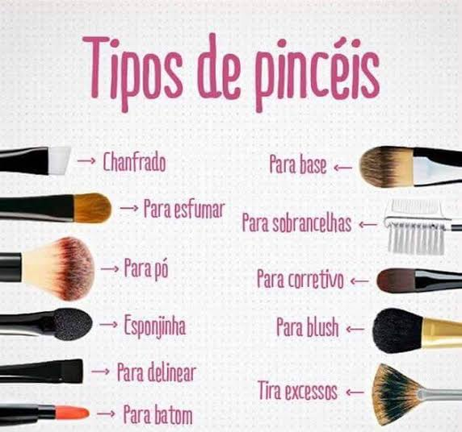

Maquiagens
Saiba tudo sobre maquiagem
Por Débora Gabriele
Atualizado em 01/fevereiro/2022
Vamos la
Maquiagens sabemos que no mundo da moda,nós, mulheres somos bem perfeccionistas, amamos nos cuidar e principalmente maquiar. Quando falamos em maquiar sempre pensamos(mds,eu nunca vou aprender a me maquiar corretamente). Eu sei como é isso, antes eu também não sabia por isso venho trazendo algumas dicas para vocês, dicas que podem ajuda literalmente a melhorar a maquiagem..eu espero que gostem meninas.

Tipos de pinceis
Tipos de delineado
Tres dicas para batom perfeito
Dicas de maquiagens simples
- Redondo
- Coração/triângulo invertido
- Quadrado/retângulo
- Oval
- Diamante
- Triângulo
- Longo
Contornos
Kit de maquiagem
Iluminador
Aprendam a como aplicar iluminador certo, meninas
E lembrando que nos mulheres somos lindas de qualquer jeito,jamais acreditem em potoshop, em peles perfeitas porque não existe, existem mulheres reais bonitas por beleza natural, charmosas e que nem precisam de maquiagens para ficarem bonitas. Acreditem em vocês mesmas, na beleza seja ela fisica ou não,vocês são incrives e maravilhosas, jamais deixem que lhes digam ao contrario.Pra mim é uma honrar criar este site e espero que possa ajudar de tal forma, agradeço desde já.